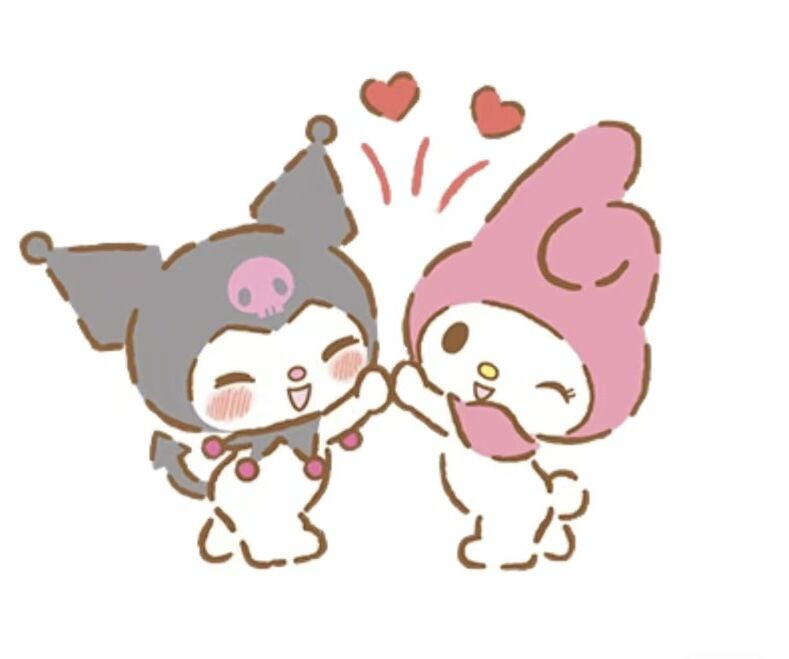

诞生年：1975年
生日：1月18日
性别：可爱的女孩子
出生地：玛丽田园的森林
个性：天真无邪的女孩子。宠物是奶奶亲手缝制的小红帽。兴趣是跟妈妈一起烤饼吃，喜欢的食物是杏仁磅蛋糕。
美乐蒂vs库洛米 《相爱相杀的那些事》
◆库洛米与美乐蒂争夺音符是有着明确规则的，比如 人类如果经历的是美丽的梦,美乐蒂可以获得粉红色 音符;如果人类喜欢库洛米的噩梦魔法，那么库洛米 就可以得到黑音符。 ◆正是在这种设定背景下，库洛米和美乐蒂从朋友关 系变成了对手关系。 ◆不过尽管两人是对手关系，但依旧互相在乎，互相关心！

我们是好朋友！